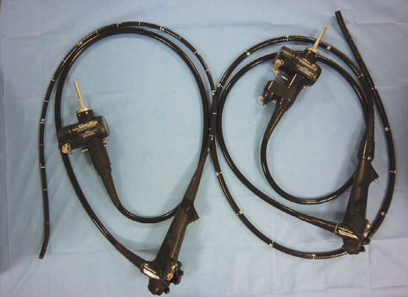
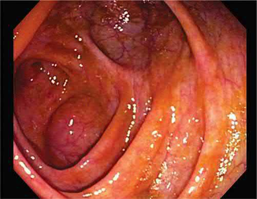
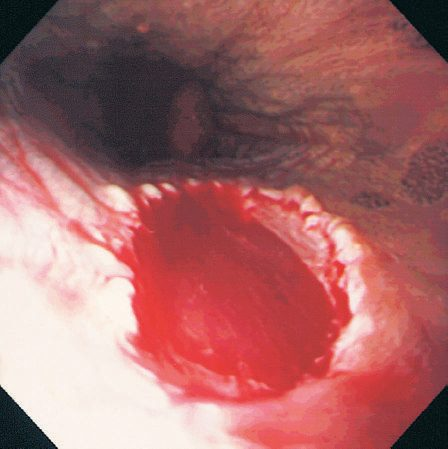
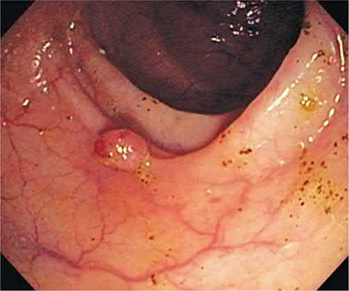

Upper and Lower GI Endoscopy
Summary
- Diagnostic and therapeutic gastrointestinal (GI) endoscopy uses flexible fibreoptic or video instruments to directly visualise, biopsy, and treat the oesophagus, stomach, duodenum, and colon, and is one of the discoveries that has contributed most to the practice of gastroenterology [1].
- Oesophagogastroduodenoscopy (OGD/gastroscopy) is the most commonly performed endoscopic procedure, providing views of the oesophagus, gastro-oesophageal junction, stomach, and duodenum, while colonoscopy is the cornerstone of colorectal cancer screening and the investigation of most colonic pathology [1].
- Both diagnostic modalities have expanding therapeutic roles, including haemostasis, polypectomy, dilatation, stenting, and endoscopic resection of early neoplasia [1][2].
Definition
- Oesophagogastroduodenoscopy (OGD), correctly termed gastroscopy, allows direct visualisation of the oesophagus, stomach, gastro-oesophageal junction, duodenal bulb, and second part of the duodenum, with biopsy and therapeutic capability [1][2].
- Colonoscopy is endoscopic examination of the entire colon and, ideally, the terminal ileum using a fully flexible colonoscope with >90° tip angulation [1].
- Flexible sigmoidoscopy visualises the rectum and colon up to the descending colon without full bowel preparation to the caecum [3].

Pathophysiology
- Not covered in source textbooks as a distinct heading, endoscopy is a diagnostic/therapeutic technique rather than a disease process.
- Technical determinants of successful colonoscopy include avoidance of loop formation in the mobile sigmoid and transverse colon (which causes paradoxical tip movement and loss of control) and the use of torque and scope withdrawal to maintain a straight passage through the sigmoid and around the splenic flexure [1].
- Carbon dioxide is now preferred over air for colonic insufflation owing to better patient tolerance and lower perforation risk, with water insufflation reducing discomfort further [1].
Clinical features
Not covered in source textbooks, not applicable to a technique; findings on endoscopy (e.g., oesophageal varices, gastric ulcer with active bleeding, gastric antral vascular ectasia, colonic polyps, angioectasia) are described under Diagnosis and Treatment below [1].
Etiology
Not covered in source textbooks, not applicable to a diagnostic/therapeutic technique.
Diagnosis
- Indications for OGD include persistent symptoms despite empirical therapy, or symptoms with warning signs such as intractable vomiting, anaemia, weight loss, dysphagia, or bleeding; it is also used in surveillance of high-risk groups such as familial adenomatous polyposis and Barrett's oesophagus [1].
- The Oxford Handbook lists indications as investigation of dysphagia, dyspepsia/reflux/upper abdominal pain, acute or chronic upper GI bleeding, iron deficiency anaemia (with colonoscopy) and unexplained weight loss, and surveillance of Barrett's oesophagus and gastric ulcers [2].
- Retroversion of the gastroscope in the stomach is essential for complete views of the cardia and fundus; a side-viewing scope is needed to visualise the ampulla, and views beyond the ligament of Treitz require a longer enteroscope [1].
- Diagnostic biopsies may be processed histologically, used for near-patient urease-based Helicobacter pylori detection, or sent as brushings for cytology/aspirates for culture [1].
- Indications for colonoscopy include unexplained rectal bleeding after proctoscopy/sigmoidoscopy, abdominal pain related to bowel actions, iron deficiency anaemia (combined with OGD), a right iliac fossa mass of suspected colonic origin, unexplained alteration in bowel habit, chronic diarrhoea (>6 weeks) after sigmoidoscopy and negative coeliac serology, follow-up of colorectal cancer (CRC) and polyps, screening for family history of CRC, assessment/removal of a radiologically identified lesion, assessment and surveillance of inflammatory bowel disease, and surveillance in acromegaly or after ureterosigmoidostomy [1].
- Colonoscopy remains the cornerstone of most CRC screening programmes, either as the primary modality or following a faecal immunochemical test (FIT) [1].
- Caecal intubation should be achieved in at least 90% of colonoscopies, confirmed by visualising the appendiceal orifice, triradiate fold, ileocaecal valve, and preferably terminal ileal intubation [1].
- Higher adenoma detection rates (ADRs) are associated with lower interval cancer rates and are improved by longer withdrawal time, optimal bowel preparation, position changes, and a "second look" at the right colon; ADR is a key quality indicator [1].
- Optical diagnosis is enhanced by dye-based chromoendoscopy (absorptive stains such as methylene blue; contrast stains such as crystal violet and indigo carmine) and narrow band imaging (NBI), which uses filtered blue (415 nm) and green (540 nm) light to highlight capillary and subepithelial vessel patterns; dye chromoendoscopy remains recommended for dysplasia surveillance in inflammatory bowel disease [1].

Flexible sigmoidoscopy is a low-risk procedure (perforation <1 in 10,000), usually performed without sedation, visualising up to the descending colon; typical uses are diagnosis/assessment of colitis and colonic neoplasia and investigation of anorectal bleeding [3]. Colonoscopy carries a higher but still low risk (perforation ~1 in 1000), is performed with or without sedation/Entonox, requires bowel preparation, and visualises the entire colon in >95% of cases [3].
- Screening and surveillance intervals set most of the elective colonoscopy workload. Screening runs from 45 to 75 for normal risk, and from 40 to 75, or 10 years before the youngest case, for intermediate risk, defined as one first-degree relative with colon cancer or two second-degree relatives [5].
- Five screening options are recognised: colonoscopy every 10 years, CT colonography every 5 years, flexible sigmoidoscopy every 5 years, multi-target stool DNA testing every 3 years, or a highly sensitive faecal immunochemical or guaiac stool test every year [5].
- Beef, vitamin C, iron and cimetidine produce false-positive guaiac results, and colonoscopy is avoided after recent myocardial infarction, in splenomegaly, and in pregnancy if fluoroscopy is planned [5].
Post-polypectomy intervals are graded by the histology and the completeness of the resection [5]:
| Finding at polypectomy | Repeat colonoscopy |
|---|---|
| Hyperplastic polyps (normal screening) | 10 years |
| 1 to 2 tubular adenomas, well to moderately differentiated | 5 years |
| 3 to 10 adenomas, or an advanced adenoma (>1 cm, high grade, dysplasia or villous) | 3 years |
| More than 10 adenomas (consider a syndrome) | 1 year |
| Large sessile adenoma, to confirm complete resection and biopsy | 3 months |
Table reformats the post-polypectomy surveillance intervals [5]. The 3-month entry is not a surveillance interval in the same sense as the others: it exists to confirm that a piecemeal resection was complete.
- When polypectomy alone suffices for an invasive lesion is a separate question from surveillance.
- A T1 lesion found after polypectomy is adequately treated by the polypectomy if the margins are clear at 2 mm, the tumour is well to moderately differentiated, there is no vascular, lymphatic or nerve invasion, and the polyp was removed in one piece; otherwise a formal colonic resection is needed [5].
- The parallel rule after transanal excision of a villous rectal polyp adds two size criteria: excision is adequate for a T1 lesion if it is under 4 cm and less than one-third of the bowel lumen diameter, with the same margin, differentiation and invasion requirements; a T2 lesion requires abdominoperineal or low anterior resection [5].
- In lower gastrointestinal bleeding, colonoscopy is both diagnostic and therapeutic, but only if the patient is stable enough for it. Diverticular bleeding, the most common cause, arises from a disrupted vasa rectum and so produces arterial bleeding; 75% stops spontaneously and 25% recurs [5].
- Colonoscopy is usually the first step and haemoclips are the best therapeutic modality, with the added value of localising the bleeding should surgery be required [5].
- Angiography comes first if the bleed is massive with hypotension and tachycardia, where highly selective coil embolization may treat it and in any case localises the segment; a tagged red-cell scan is the most sensitive test but is reserved for intermittent bleeds that are hard to localise [5].
- A patient who is hypotensive and not responding to resuscitation goes to theatre for a segmental colectomy at an identified site, or a total abdominal colectomy if the source has not been localised [5].
The UK colonoscopy workload is defined less by symptomatic referral than by two surveillance programmes, and NICE governs one of them directly while handing the other to a specialty society.
For inflammatory bowel disease, CG118 sets the intervals. Offer a baseline colonoscopy with chromoscopy and targeted biopsy of any abnormal areas to determine risk, then stratify [6]:
| Risk band | Criteria | Next colonoscopy |
|---|---|---|
| Low | Extensive but quiescent ulcerative or Crohn's colitis, or left-sided ulcerative colitis (but not proctitis alone) or Crohn's colitis of similar extent | 5 years |
| Intermediate | Extensive colitis with mild active inflammation confirmed endoscopically or histologically, or post-inflammatory polyps, or a first-degree relative with colorectal cancer aged 50 or over | 3 years |
| High | Extensive colitis with moderate or severe active inflammation, or primary sclerosing cholangitis (including after liver transplant), or colonic stricture in the past 5 years, or any grade of dysplasia in the past 5 years, or a first-degree relative with colorectal cancer aged under 50 | 1 year |
Table reformats the CG118 IBD surveillance bands [6]. Note that the family-history criterion appears in both the intermediate and high bands, separated only by the relative's age at diagnosis, and that primary sclerosing cholangitis alone puts a patient into annual surveillance.
- Two technique requirements follow. Continue to use colonoscopy with chromoscopy as the method of surveillance for people with IBD [6].
- And offer a repeat colonoscopy with chromoscopy if any colonoscopy is incomplete, considering whether a more experienced colonoscopist is needed [6].
- Surveillance is not indefinite: after each test, discuss the potential benefits, limitations and risks of continuing, and base a decision to stop on potential benefit, the person's preferences and any comorbidities [6].
For adenomas, NICE explicitly defers to the specialty society. CG118 carries no intervals of its own for post-polypectomy surveillance, directing the reader instead to the British Society of Gastroenterology's guidelines on post-polypectomy and post-colorectal cancer resection surveillance [6]. Alongside both sits the NHS Bowel Cancer Screening Programme, which supplies the asymptomatic screening colonoscopy workload [7].
Scoring and Severity
Not covered in source textbooks for a formal bowel-preparation or endoscopic severity score; however, polyp risk of malignancy on white-light assessment increases with size >2 cm, a large sessile component, or a depressed region [1].
Treatment and Management
Consent and sedation: Informed consent should cover the nature, purpose, risk, and alternatives of the procedure; patients should be informed of minor adverse events with risk >10% and serious events with risk >0.5% [1]. Most diagnostic OGD and colonoscopy can be performed without sedation or with pharyngeal anaesthesia alone, but therapeutic procedures typically use conscious sedation and analgesia; medication-induced respiratory depression in elderly or comorbid patients is the greatest cause of endoscopy-related mortality [1].
Anticoagulation management: Diagnostic OGD, colonoscopy, enteroscopy, diagnostic EUS, and ERCP without sphincterotomy, plus mucosal biopsy, are low-risk for bleeding; polypectomy, sphincterotomy, stent placement, and stricture dilatation are high-risk [1]. Aspirin/NSAIDs at standard doses do not require discontinuation before endoscopy [1].
- Therapeutic OGD: Band ligation has replaced sclerotherapy for oesophageal varices; thrombin-based glue sclerotherapy controls gastric/duodenal variceal bleeding [1].
- Injection of adrenaline combined with a second haemostatic technique (thermal coagulation or endoclips) is the technique of choice for actively bleeding or high-risk peptic ulcers, followed by 72 hours of intravenous proton pump inhibition [1].
- Chronic angioectasia bleeding is most safely treated with argon plasma coagulation (APC) owing to controlled burn depth, and haemostatic powders are useful for diffuse bleeding or salvage [1].
- Benign oesophageal/pyloric strictures are dilated with through-the-scope balloons or Savary-Gilliard bougies; achalasia may be treated by pneumatic balloon dilatation (30-40 mm balloon), botulinum toxin injection (benefit lasting 3-6 months), or peroral endoscopic myotomy (POEM) [1].
- Self-expanding metal stents improve symptomatic dysphagia and quality of life in malignant oesophageal/gastric outlet obstruction and are the mainstay for tracheo-oesophageal fistulae [1].
- Early oesophageal/gastric neoplasia (including Barrett's high-grade dysplasia/early adenocarcinoma) can be managed by endoscopic mucosal resection (EMR) or endoscopic submucosal dissection (ESD), with radiofrequency ablation the most common technique for eradicating residual Barrett's epithelium [1].
- PEG (percutaneous endoscopic gastrostomy) tube insertion enhances nutritional/functional outcome in patients unable to maintain oral intake [1].

- Therapeutic colonoscopy: The most common therapeutic procedure is polyp resection [1].
- Non-pedunculated polyps up to 15 mm are removed by cold snare; stalked polyps by hot snare polypectomy using cut, coagulation, or blended diathermy current; postpolypectomy bleeding is prevented by adrenaline preinjection of the stalk or application of endoclips/an Endoloop [1].
- Non-pedunculated polyps 10-19 mm can be removed en bloc by EMR (lifting the polyp off the muscularis propria with submucosal injectate); lesions >20 mm require piecemeal EMR with thermal ablation of the resection edge to prevent recurrence; ESD (performed with a knife rather than a snare) permits en bloc resection of large polyps and superficial submucosal cancers with lower recurrence but a steep learning curve [1].
- APC and heater probes treat symptomatic colonic angioectasias; laser photocoagulation can debulk unresectable tumours; through-the-scope balloons dilate short (<5 cm) colonic strictures (anastomotic strictures respond most durably); self-expanding metal stents palliate inoperable malignant strictures or decompress obstruction to allow planned rather than emergency surgery [1].

Third-space endoscopy: working in the submucosal plane
A distinct family of procedures shares one manoeuvre, the submucosal tunnel, and it is worth learning them together. Per-oral endoscopic myotomy (POEM) has origins in the late 1970s but was popularised in its current form by Inoue and colleagues in 2008, who performed it in 17 patients with achalasia using a long submucosal tunnel to divide the circular muscles of the gastro-oesophageal junction [8]. The same architecture, mucosotomy, tunnel, selective circular myotomy, clip closure, is then reapplied at the cricopharyngeus for Zenker diverticulum and at the pylorus for gastroparesis.
- POEM for achalasia. Achalasia has an incidence of 0.03 to 1.63 per 100,000 per year and is hypothesised to follow degeneration of inhibitory neurons in the oesophageal myenteric plexus; it is incurable, so the goal of any intervention is to facilitate oesophageal emptying and prevent further dilatation [8].
- POEM was non-inferior to surgical myotomy for symptom control at 2 years, and expanded indications now include diffuse oesophageal spasm, hypertensive lower oesophageal sphincter, type III spastic achalasia, nutcracker and jackhammer oesophagus, where a longer myotomy can be extended proximally in a way laparoscopic myotomy cannot [8].
- A sigmoid oesophagus carries up to twice the risk of complications and should be identified before offering the procedure [8].
Technical points that recur across the whole family: a clear liquid diet for 48 hours preoperatively because retained food makes intubation and endoscopy more dangerous; carbon dioxide insufflation, because capnothorax, capnomediastinum and capnoperitoneum are common during POEM and resolve faster than air; a vertical rather than horizontal mucosotomy, because it is easier to close with clips; division of the circular muscles proximal to distal with the outer longitudinal fibres left intact; and complete clip closure of the mucosotomy to avoid mediastinal contamination [8]. A chest radiograph is obtained in recovery: small volumes of gas are left alone, a large capnoperitoneum can be decompressed with a transabdominal Veress needle or angiocatheter, and a large capnothorax causing respiratory or cardiac compromise is drained with a pigtail catheter [8].
- Follow-up after POEM is where the trade-off appears. Around 80% of patients report clinical success at 5 years, assessed with the Eckardt score, a summation of four symptoms, dysphagia, regurgitation, chest pain and weight loss, each scored 0 to 3 by frequency, where a score above 3 indicates persistent or recurrent symptoms [8].
- No antireflux procedure is performed during POEM, so postoperative gastro-oesophageal reflux is estimated at 16% to 22% in large series, and subjective symptoms correlate poorly with pH-measured reflux, which is why objective testing is preferred: timed barium swallow, pH monitoring at 6 to 12 months, endoscopy with compliance planimetry, and high-resolution manometry when necessary [8].
- A contrast column greater than 5 cm at 5 minutes on timed barium swallow may indicate treatment failure, and continued endoscopic surveillance is recommended because of the increased risk of squamous cell carcinoma in achalasia [8].
- The learning curve for mastery plateaus at about 20 cases for an experienced endoscopist [8].
- For contrast, after laparoscopic myotomy without fundoplication postoperative reflux was found in 31.5% of patients, versus 8.8% with fundoplication, which is why partial fundoplication is recommended after surgical myotomy [8].
Z-POEM for Zenker diverticulum. The diverticulum is a false diverticulum herniating through Killian's triangle, bounded above by the pharyngeal constrictors and below by cricopharyngeus, driven by poor cricopharyngeal relaxation and raised intraluminal pressure; incidence is 0.01% to 0.11%, typically in the fifth to eighth decades [8]. Flexible endoscopic diverticulotomy achieves a technical success rate of 99.4% and overall clinical success of 87.9%, with less morbidity and shorter length of stay than the open approach at similar technical success; bleeding and perforation are the commonest complications [8]. Size predicts success in both directions: clinical success is most likely for a septum between 2.5 and 5 cm, since cricopharyngeal myotomy is harder in small diverticula and predisposes to recurrence, while in diverticula over 5 cm the common pitfall is leaving a residual sac [8].
- Per-oral pyloromyotomy (POP, or G-POEM) for gastroparesis was first completed by Khashab in 2013 [8].
- Endoscopy is performed first to exclude a mechanical cause such as malignancy or ulceration, and the diagnosis is confirmed on gastric emptying scintigraphy after holding prokinetics for at least 48 hours: normal emptying leaves 37% to 90% of the meal at 1 hour, 30% to 60% at 2 hours and 0% to 10% at 4 hours, so greater than 60% retention at 2 hours or greater than 10% at 4 hours indicates gastroparesis [8].
- All circular muscle fibres of the pylorus must be cut to prevent recurrent symptoms, and adequacy is confirmed by withdrawing from the tunnel and passing the scope through an oval-shaped pylorus [8].
- Symptoms commonly worsen transiently from procedural oedema; a proton pump inhibitor is continued for at least 4 weeks to protect the mucosal closure [8].
- Clinical success is 85.1% after POP versus 84% after surgical pyloroplasty, with pyloroplasty carrying longer length of stay, operative time and blood loss; POP can also be used in post-oesophagectomy patients who did not have a pyloroplasty at the index operation [8].
Endoscopic resection: selecting between EMR and ESD
The two techniques were developed for the same problem, non-pedunculated lesions that a snare alone cannot take safely, and they diverge on en bloc resection. EMR uses suction, lift and underwater techniques and usually removes large lesions piecemeal, taking some of the submucosa with them; ESD was developed for gastric lesions with thicker mucosa and uses precise submucosal injection to lift the entire lesion for resection in one specimen [8]. Both are indicated for superficial oesophageal cancer, Barrett's oesophagus, early gastric cancer, some duodenal lesions, and colonic and rectal polyps and cancers [8].
| EMR | ESD | |
|---|---|---|
| Specimen | Often piecemeal | En bloc in one specimen |
| Contraindications by lesion | Submucosal penetration or deeper, size greater than one-third of the luminal circumference, lesion >3 cm, or prohibitive perforation risk | Limited to lesions ≤ two-thirds of the oesophageal lumen |
| Perforation rate | 1% to 2% | 2% to 3% |
| Local recurrence | 10% to 30% for colorectal adenomas | 1% |
| Procedure time | Shorter | Longer |
Table compares the two resection techniques [8]. The trade-off is straightforward: ESD buys a better chance of en bloc resection and a much lower recurrence rate at the cost of a longer procedure and a slightly higher perforation rate.
- Technique details that change outcomes. Endoscopy and endoscopic ultrasound are performed before either procedure to confirm depth of invasion [8].
- Carbon dioxide insufflation is preferred over air because it gives superior patient comfort and reduces readmissions after endoscopy [8].
- Succinylated gelatin was superior to normal saline as a submucosal injectate in a randomised double-blind trial, reducing procedure duration and the number of piecemeal resections needed [8].
- Before resection the lesion is viewed with high-definition white light and chromoendoscopy, and for colorectal lesions the Paris classification is assessed, because flat lesions with a central depression (0-IIa+c) carry a higher risk of submucosal invasion [8].
- The lesion is positioned at 6 o'clock with a straight, relaxed endoscope so gravity pulls intraluminal fluid away from it [8].
- Piecemeal specimens should carry 2 to 3 mm margins of normal mucosa, working from an edge inwards to reduce adenoma islands, and argon plasma coagulation should not be used to treat visible residual lesion, because ablated residual disease recurs more often than completely resected disease [8].
- ESD specimens are pinned flat and immersed in formalin for an expert pathologist to assess margins and depth [8].
- Complications and their management. Up to 11% of EMR patients bleed intraprocedurally, usually manageable with snare-tip soft coagulation, a coagulation grasper, or a clip; up to 7% bleed after the procedure, most within the first 48 hours and most resolving with supportive care alone [8].
- Reintervention is indicated for haemodynamic instability or failure to settle, and if bleeding continues despite repeat endoscopy, surgical resection should be considered; interventional radiology is an option but carries a risk of hollow viscus ischaemia [8].
- Perforation can usually be closed with clips or endoscopic suturing, and thermal injury from the dissection or haemostasis current can present as a delayed perforation up to a week later [8].
- Surveillance after resection. After EMR of colorectal adenomas the first follow-up endoscopy is at 5 to 6 months, with further surveillance 12 months later, and routine biopsy of normal-appearing scar is not required [8].
- After EMR with or without radiofrequency ablation for Barrett's oesophagus, endoscopic evaluation is required within 1 year; EMR with radiofrequency ablation carries a 2.6% recurrence rate of high-grade dysplasia and complete EMR a 3.3% recurrence rate of dysplasia [8].
- Outcomes after ESD are strong enough to displace surgery in selected disease: 91.2% overall 3-year survival after ESD for early gastric cancer with 99.7% 3-year cancer-related survival, and for oesophageal cancer 98% to 100% 5-year cause-specific survival with improved quality of life compared with oesophagectomy [8].
- Duodenal ESD achieves complete resection in 70% to 95% of non-ampullary tumours but carries a higher perforation risk given the thin wall, and endoscopists are advised to avoid duodenal ESD during the early phase of their practice [8].
- Beyond both techniques sit submucosal tunnelled endoscopic resection (STER) and endoscopic full-thickness resection, for deeper neoplasms and highly skilled operators only [8].
Endoscopic management of gastrointestinal tract defects
Perforations and anastomotic leaks in a stable patient are increasingly managed endoscopically rather than operatively, using three overlapping tool sets: stents, vacuum therapy, and closure devices [8].
Stents. For mid to distal oesophageal defects, fully covered stents are preferred when the aim is temporary restoration of luminal integrity, because the polymeric covering prevents tissue ingrowth and allows removal; the same feature increases migration risk, so clipping or suturing the stent in place should be considered [8]. Other complications are bleeding, perforation, long-term stricture, globus sensation, and reflux when the stent crosses into the stomach; antireflux-barrier stents have not shown a significant difference in reflux symptoms in randomised trials [8]. Lumen-apposing metal stents (LAMS) are short fully covered stents, 8 to 30 mm, with barbell-shaped flanges, first designed for pancreatic pseudocyst drainage and endoscopic necrosectomy and now used for anastomotic strictures and leaks and to create endoscopic anastomoses such as gastrojejunostomy and cholecystoduodenostomy [8].
- Endoluminal vacuum-assisted closure (EVAC) was first reported in 2008 for a rectal leak and is now used for leaks of the oesophagus, stomach, small bowel and colon; commercial devices exist in Europe but not North America, where off-label negative-pressure wound therapy supplies are adapted [8]. Timing dominates selection: EVAC should be considered for stable patients within 90 days of developing a leak, since patients beyond 90 days are much less likely to achieve endoscopic closure [8].
- A black sponge is fashioned around a 16-French nasogastric tube and drawn through the defect into the abscess cavity; negative pressure must not exceed 125 mmHg, and the sponge is exchanged every 3 to 4 days because granulation tissue grows into it [8].
- If no progress is made in 2 weeks the patient should be reassessed for surgery [8].
- The four proposed mechanisms are macrodeformation shrinking the defect, microdeformation triggering growth factor release and cell proliferation, increased microvascular density, and exudate control [8].
- Reported effectiveness is 67% to 100% for closing oesophageal perforations without major surgery, with up to a 9% long-term stricture risk, and 80% to 90% for bariatric leaks compared with 36% for stenting alone [8].
- Closure devices divide by depth.
- Through-the-scope (TTS) clips close mucosa only and manage defects up to 3 cm; they work best on fresh defects created during a procedure and are less effective on inflamed tissue such as an undetected perforation or a fistula [8].
- Over-the-scope (OTS) clips are loaded on a cap, grasp tissue on either side of the defect, and close full-thickness defects of 2 to 3 cm, incorporating the submucosa [8].
- Their success rate tracks the chronicity of the defect [8]:
| Indication for OTS clip | Success rate |
|---|---|
| Intentional defects created during endoscopic resection | 92.8% |
| Perforations | 85.3% |
| Refractory or large ulcer bleeding | 86% |
| Anastomotic leaks | 72.6% |
| Fistulae | 55.8% |
Table reformats reported OTS clip success rates by indication [8]. Removing an OTS clip is harder than removing a TTS clip, needing either a specialised cutting device or bipolar forceps to break the clip [8].
- Endoscopic suturing devices allow full-thickness bites for large defects, with clinical success reported at 87.5% for iatrogenic perforations, 83% for intentional mucosal or submucosal defects, and 72% for stent fixation [8].
- One device grabs tissue with a screw-in "tissue helix" and therefore carries a risk of puncturing viscera or vessels outside the target layer; the other passes helical tacks through a standard single-channel endoscope and cinches a suture through them [8].
- As with EVAC, effectiveness drops sharply for chronic defects such as fistulae older than 90 days [8].
Bariatric endoscopy
- Only two endoscopic obesity interventions had regulatory approval as of 2023: intragastric space-occupying balloons and endoscopic plication [8].
- Balloons are approved in the United States from a BMI of 30 to 35 kg/m², and in Europe from 27 kg/m²; they are swallowed or placed endoscopically, filled with gas or saline, and maintained for 6 to 12 months before removal or replacement, producing 6% to 9.5% total body weight loss against 2.8% to 3.4% in controls [8].
- Adverse effects include abdominal pain, bloating, nausea and vomiting, bacterial overgrowth and pancreatitis, and death has been reported [8].
- Endoscopic sleeve gastroplasty places serial sutures from the incisura angularis to the gastric cardia, excluding the greater curve.
- In the MERIT trial, combined with lifestyle modification it produced a mean total body weight loss of 13.6% versus 0.8% for lifestyle modification alone, with 80% of patients improving in one or more metabolic comorbidities and 68% maintaining 25% excess weight loss at 2 years; the complication rate was 2%, comprising intra-abdominal abscess, bleeding, and malnutrition requiring reversal [8].
- For weight regain after Roux-en-Y gastric bypass, transoral outlet reduction cinches the gastrojejunal anastomosis to a smaller diameter with a purse-string suture, usually with radiofrequency ablation of the mucosa to aid apposition, and patients maintain 25% excess weight loss at 1 year [8].
Training and competence in endoscopy
Endoscopy is one of the few technical skills with a published, staged curriculum and a pass mark, which makes it a useful model for how competence is defined. Surgeons have been central to endoscopy since Mikulicz-Radecki developed the first gastroscope in 1880, but use only expanded once fibreoptics arrived in the 1950s; the move from diagnostic to therapeutic endoscopy followed in the 1960s with the first ERCP in 1968, the first colonoscopic snare polypectomy in 1969, and the first endoscopic management of upper gastrointestinal haemorrhage in 1969 [8].
- Case numbers alone were never accepted as evidence of competence.
- A 2006 survey found graduating general surgery residents averaging 20 upper endoscopies and 35 colonoscopies; required numbers rose in 2009 to 50 colonoscopies and 35 upper endoscopies, aligned with a prospectively identified competency number of 50 colonoscopies [8].
- Confidence lagged behind the numbers: a 2015 national survey found only 66.7% of senior residents confident in upper endoscopy and 52.7% in colonoscopy, and a 2016 survey found only 29% comfortable with advanced endoscopy and 5% with therapeutic endoscopy [8].
- The curricular response has three layers.
- A five-level flexible endoscopy curriculum maps cognitive and technical milestones roughly onto postgraduate year, from basic scope manipulation and endoscope setup, through indications, contraindications and periprocedural management, to image differentiation and finally the tools and adjuncts of therapeutic endoscopy [8].
- Graduates must score at least 18 on the GAGES (Global Assessment of Gastrointestinal Endoscopic Skills) upper and lower endoscopy scoresheets, which rate five categories on a 1 to 5 Likert scale: endoscopic intubation for upper endoscopy, scope navigation, use of strategies for colonoscopy, ability to keep a clear endoscopic field, instrumentation, and quality of examination [8].
- All graduates must also pass the Fundamentals of Endoscopic Surgery programme, combining online didactics, a multiple-choice test and a virtual-reality endoscopic skills assessment [8].
- Simulation substitutes effectively for clinical volume. A simulation-based endoscopy training curriculum produced a 92% first-attempt pass rate among PGY2 residents with a mean score of 454, statistically indistinguishable from PGY5 residents in the same programme (89%, mean 427) and comparable to benchmark data from endoscopists with more than 300 cases [8].
- Completing all components of the flexible endoscopy curriculum was strongly associated with passing the examination (odds ratio 2.3, 95% CI 1.5 to 3.7) [8].
- Beyond residency, a 2-day intensive flexible endoscopy course for fellows decreased time to perform a targeting task by 40% and error rates by 49%, alongside improved confidence and stated intention to use surgical endoscopy in future practice [8].
For the advanced resection techniques the recommended pathway is stepwise and explicit: didactic self-study, then training courses of increasing complexity with simulation and animal models, then proctored live cases with an expert senior colleague, beginning with lesions of low technical complexity and clear indications before expanding [8].
Surgeries
Endoscopy itself substitutes for, or is combined with, surgery in several contexts: transanal endoscopic microsurgery and endoscopic submucosal resection for complex colonic polyps are alternatives to surgical resection [9]. Endoscopic techniques may serve as a bridge to surgery, for example, colonic stenting to allow planned rather than emergency surgery for obstructing malignancy [1]. Not covered in source textbooks beyond this, GI endoscopy is predominantly an endoluminal, non-operative discipline; laparoscopic and open GI resections are addressed in other topic pages.
Complications
- OGD: Diagnostic upper GI endoscopy is safe, with a serious complication rate of approximately 1:10,000, mostly related to sedation and comorbidity; perforation can occur anywhere in the upper GI tract including the oropharynx, is rare in diagnostic procedures (usually reflecting inexperience) and more common in therapeutic endoscopy (oesophageal dilatation, EMR/ESD) [1].
- Symptoms of endoscopic oesophageal perforation include neck/chest pain, tachycardia, dysphagia/drooling saliva, hypotension, abdominal pain, and surgical emphysema; management includes CT/water-soluble contrast studies, nil by mouth, IV fluids and antibiotics, and early upper GI surgical review [1].
- The Oxford Handbook cites a median perforation risk of 71 in 3000 for OGD, highest in elderly patients, those with oesophageal pathology, and during therapeutic intervention, plus cardiopulmonary adverse events from sedation (aspiration pneumonia, respiratory depression/arrest, cardiac events) and bleeding, commonest after biopsy or therapeutic procedures [2].
- Colonoscopy: Complications during routine diagnostic colonoscopy are rare in experienced hands; extensive diverticulosis, diverticulitis, and severe colitis are risk factors for perforation [1].
- Polypectomy is associated with perforation (0.1%) and haemorrhage (0.3%); immediate haemorrhage is managed with endoclips or snare-tip coagulation, delayed haemorrhage (1-14 days post-polypectomy) is usually managed conservatively but may need transfusion or repeat colonoscopy [1].
- Small perforations recognised at the time of polypectomy should be closed with endoclips with a period of observation; abdominal pain and cardiovascular compromise post-polypectomy raise suspicion for delayed perforation and faecal contamination, requiring nil by mouth, IV resuscitation, antibiotics, and prompt CT assessment [1].
- Oxford Handbook figures: flexible sigmoidoscopy perforation risk <1 in 10,000; colonoscopy perforation risk approximately 1 in 1000 [3].
- Bacteraemia incidence varies by procedure: colonoscopy 2-4%, diagnostic upper GI endoscopy 4%, sigmoidoscopy 6-9% [1].
Prognosis
- Not covered in source textbooks as an independent heading.
- Higher colonoscopy adenoma detection rates are associated with lower rates of interval colorectal cancers [1].
- Colonoscopic CRC screening aims to increase detection of early-stage cancers and remove adenomatous polyps before malignant progression, thereby reducing mortality [1].
- Early diagnosis of endoscopic perforation significantly improves outcome and may allow endoscopic (rather than surgical) management with clips or suturing [1].
References
- Bailey & Love's Short Practice of Surgery, 28th ed., Ch. 9
- Oxford Handbook of Clinical Surgery, 5th ed., Ch. 8
- Oxford Handbook of Clinical Surgery, 5th ed., Ch. 2
- Maingot's Abdominal Operations, 13th ed., Ch. 5
- The ABSITE Review, 2022, Ch. 27
- NICE Clinical Guideline CG118: Colorectal cancer prevention — colonoscopic surveillance in adults with ulcerative colitis, Crohn's disease or adenomas (2011, last updated 2022), 1.1; 1.1.2; 1.1.2, Box 1; 1.1.3; 1.1.4; 1.1.5; 1.1.6 www.nice.org.uk
- NHS Bowel Cancer Screening Programme (NHSBCSP): programme overview, NHS England, Programme overview www.gov.uk
- Sabiston Textbook of Surgery, 22nd ed., Ch. 12
- Bailey & Love's Short Practice of Surgery, 28th ed., Ch. 10